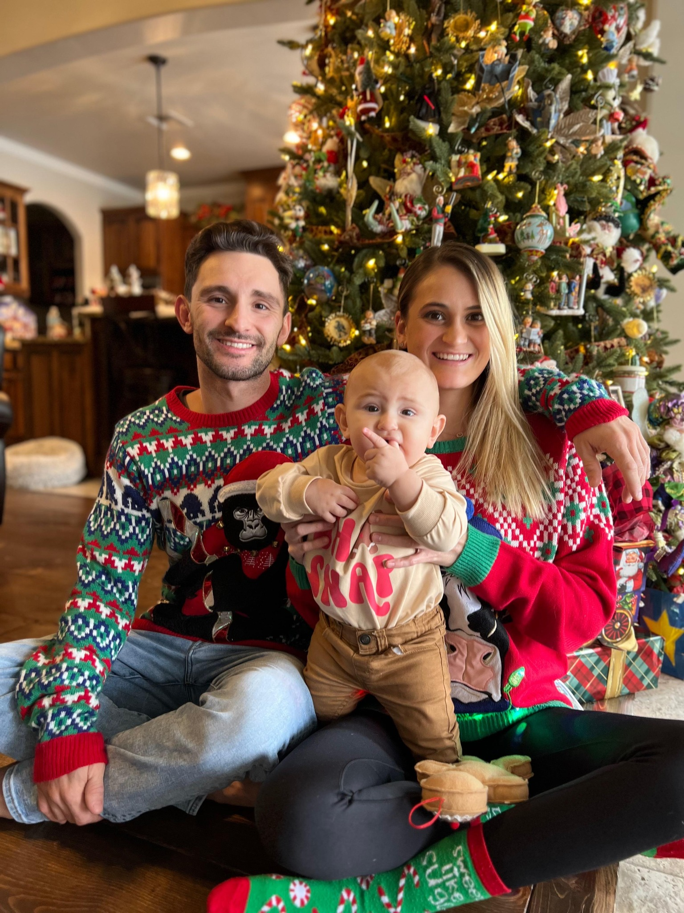

My Family

Auto Biography
Meet Andrew Vreeland, a proud Floridian who has lived a life marked by diverse experiences and achievements. Andrew, now 27 years old, has spent eight years in the military where he honed his leadership skills and served as both an infantry assaultman and an avionics technician. During this time, he had the opportunity to travel throughout Southeast Asia and live in different parts of the United States. Recently, Andrew has embarked on a new chapter in his life by training to become a software engineer. With his associates degree in avionics systems technology and a strong drive to learn, he is determined to master Java and become a valuable asset in the tech industry. Aside from his professional aspirations, Andrew is also a devoted husband to his beautiful wife Kelsy and a loving father to their son Liam. They have a happy home filled with the love of their three dogs, Cooper, Rosco, and Maybell. Andrew's future goals include not only continuing to be a great husband and father, exploring the world and making memories with his family. With his extensive leadership and teamwork skills, unwavering determination, and a heart full of love, there is no doubt that Andrew Vreeland will continue to conquer new challenges and make a positive impact in the world.
Education History
Prior Job Experience
Goals
- Code Fellows Full Stack Development Bootcamp
- Associates in Avionics Systems technology
- Four years Active Duty Service in the Air Force as an Avionics Expeditor for F-16s
- Four years Active Duty Service in the Marine Corps as an Infantry assaultmen
- Mastering my understading of coding
- Maintaing a healthy life work balance
- Maximizing my time with family through financial freedom
- World travel
- Dubai, United Arab Emirates
- London, United Kingdom
- Cancún, Mexico
- Bali, Indonesia
- Crete, Greece
- Rome, Italy
- Cabo San Lucas, Mexico
- Istanbul, Turkey
- Paris, France
- Hurghada, Egypt